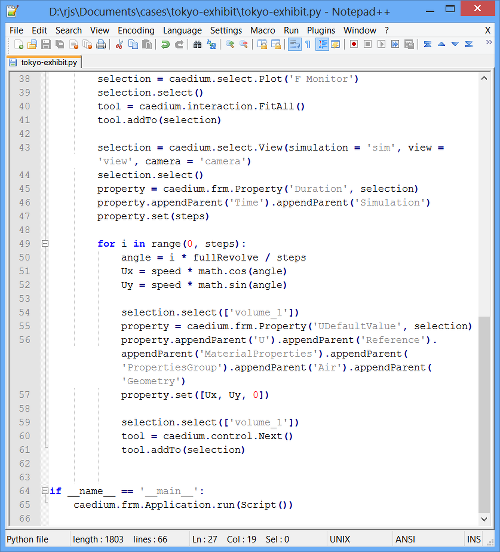

Automate CFD Simulations with Python Scripting
The latest release of Caedium (v5.0) introduces Python scripting for Computational Fluid Dynamics (CFD) simulations to automate repetitive tasks and perform parameter studies. This release also has a new Caedium tabbed toolbar GUI which is a more intuitive way to interact with and control your CFD simulations, along with a host of other enhancements.
 Caedium v5 in ActionScripted CFD Simulation for a Wind Direction Sweep (high resolution version)
Caedium v5 in ActionScripted CFD Simulation for a Wind Direction Sweep (high resolution version)
{kind=link}
Request and activate a free 30-day trial to enable Computational Fluid Dynamics (CFD) software simulation in Caedium.
Python Scripting
The new scripting capability in Caedium can record a series of tasks as Python code that can then be played back to automate repetitive tasks or be modified with custom Python code to include parameter sweeps to perform multiple CFD simulations automatically. You have the full power of Python, a popular and well documented scripting language, to enhance your scripts as needed, limited only by your imagination. Examples of scripting applications include:
- An automated wind direction sweep around a structure to determine wind loads
- An automated simulation setup and results comparison with parametric geometry creation for a sequence of configurations
Caedium Python Script File
Improved Interaction
- Interact with a more intuitive GUI using ribbon-like tabbed toolbars
- Link multiple simulations to control them as a group with the option to run them simultaneously
- Undo and redo multiple levels in a single operation
- Select standard Fit-All views, such as front and back
- Use a 3Dconnexion 3D mouse to control the view on Windows
More Physics
- Realize faster and more robust simulation convergence using the polyhedral (dual mesh) conversion option
- Control the mesh size across many entities using a maximum element size for the Accuracy tool
- Set time dependent boundary conditions for primary variables, such as velocity
- Set a partial slip condition for a wall boundary condition
- Use the latest NVIDIA CUDA 5.0 release with support of the Kepler architecture for the CUDA GPU linear solver option
 Polyhedral Volume Mesh Slice
Polyhedral Volume Mesh Slice
Credits
This release was made possible by:
- Open Cascade
- OpenFOAM®
- VTK
- wxWidgets
- Hardware Donations:
- NVIDIA
- Per Hassel Sørensen, University of Stavanger, Norway
- Translations:
- Pierre Castellani, TEOtech
- Niklas Hagenow
- Gregor Matl
- Giampiero Porro, Datamed srl
- Fernando Prevedello, XCAE
- Sei-Ichi Tanabe-Tanabu, Visual Technology
OpenFOAM is a registered trademark of OpenCFD and is unaffiliated with Symscape.
Feedback
Questions? Ideas? Problems?